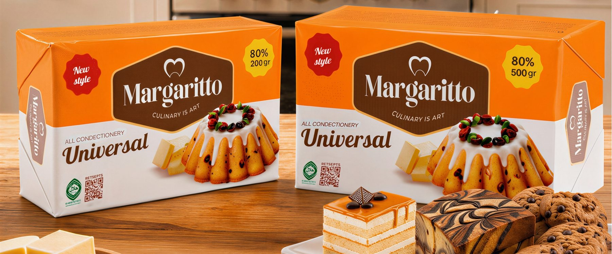
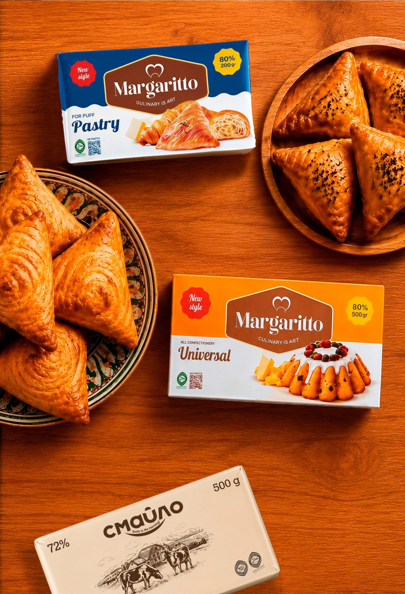

Margarin
Margaritto
Margaritto mahsulotlarini koʻrishKulinariya — bu sanʼat
Margaritto — Aberno Group zavodida xalqaro standartlarga mos liniyalarda ishlab chiqariladigan margarin. Uy oshxonasidan yirik qandolat sexigacha — pishiriqlarga taʼm va mayinlik beradi.
Bugun Margaritto savdo tarmoqlari orqali oilalar oshxonasiga, shuningdek, respublikamizdagi yetakchi non va qandolat korxonalari ishlab chiqarishiga yetib bormoqda.
Barcha sakkizta mahsulot
Uy oshxonasi uchun
200 va 500 gramm
Ikki tur briket: har xil pishiriqlar uchun Universal 80% hamda somsa, kruassan va Napoleon uchun qatlamli xamir margarini 80%.
Universal 80% Qatlamli xamir uchun 80%Korxonalar uchun
10 va 20 kilogramm
Non va qandolat korxonalari uchun qutilarda: qaymoqli taʼmli 72% va 82%, kremlar uchun 72% va 80%, qatlamli xamir uchun 80% hamda eritilgan oʻsimlik yogʻi 99%.
Ulgurji soʻrov yuborishBrend haqida
- Xomashyodan qadoqlashgacha qatʼiy sifat nazorati
- Uy sharoiti va sanoat ishlab chiqarishi uchun turlari
- Halol sertifikati, ISO 22000:2018 va HACCP
- Oʻzbekistonda ishlab chiqarilgan
Rasmiy kanallar
Margaritto ijtimoiy tarmoqlarda
Keyingisi